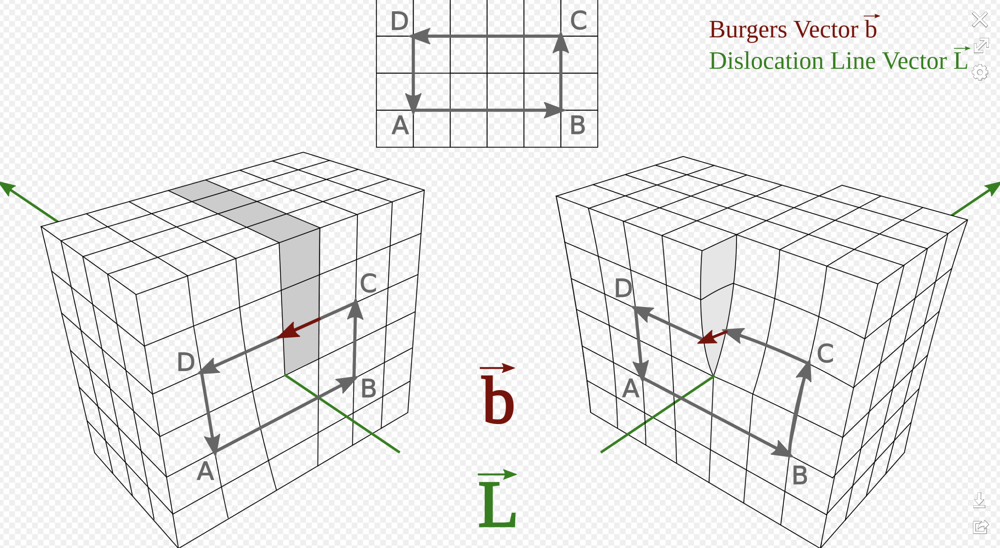

Dislocations are a type of defect in a crystal structure. They are areas where the atoms are out of position in the crystal structure. Dislocations are divided into two basic types: edge dislocations and screw dislocations.

Edge Dislocations
Edge dislocations are caused by the termination of a plane of atoms in the middle of a crystal. In such a case, an extra half-plane of atoms is introduced.
The vector that is perpendicular to the dislocation line and points in the direction where the extra half-plane of atoms was inserted is called the Burgers vector.
Screw Dislocations
Screw dislocations are a bit more difficult to visualize. They are formed by a shear stress that is applied to the crystal structure.
The Burgers vector is parallel to the dislocation line for a screw dislocation.
In both types of dislocations, the magnitude of the Burgers vector is equal to the lattice parameter, \(a\).
When a single crystal rod with a cross-sectional area \(S\) is subjected to a tensile force \(F\), the critical resolved shear stress \(\tau_0\) is given by Schmid’s Law:
where \(\phi\) is the angle between the tensile direction and the normal to the slip plane, and \(\lambda\) is the angle between the tensile direction and the slip direction.
The term \(\cos(\phi) \cdot \cos(\lambda)\) is known as the Schmid factor. It represents the resolved shear stress on a particular slip system. The slip system with the highest Schmid factor will be the first to undergo plastic deformation when the material is subjected to a stress. The Schmid factor is a measure of the component of the applied stress that can contribute to dislocation motion along a slip plane in a specific direction.